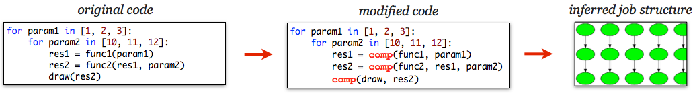

Compmake¶

Compmake is a non-obtrusive module that provides Make–like facilities to a Python application, including:
- Minimal effort parallelization (multiple CPU on a single host, cluster computing using SGE, and experimental support for cloud computing using Multyvac).
- Caching of temporary results: you can interrupt your program and restart it without losing what was already computed.
- Failure tolerance: if a job fails, other jobs that do not depend on it continue to be executed.
- A console for inspecting failures and partial completion, with familiar commands such as make, clean, etc.
Screencast¶
Some visualizations of the jobs graph during execution¶
Robustness to job failure

Color code for job states
- done
- Job executed succesfully
- in progress
- Job currently executing
- failed
- Job failed
- blocked
- Job blocked because a dependency failed
Simple dynamic jobs

Dynamic jobs and recursive parallel executions

Installation¶
The simplest way to install Compmake is:
$ easy_install compmake
or, alternatively, using pip install compmake.
You can also fork the project on GitHub.
Basic usage¶
To use Compmake, you have to minimally modify your Python program, such that it can understand the processing layout and the opportunities for parallelization.
An invocation of the kind:
function(param)
becomes:
context.comp(function, param)
The result of comp() is a promise that can be reused in defining other jobs. For example, a program like ::
res = function(param)
function2(res)
becomes:
r = context.comp(function, param)
context.comp(function2, r)
Download a demo example.py that you can try.
You would run the modified program using:
$ python example.py
This gives you a prompt:
Compmake 3.3 (27 jobs loaded)
@:
Run “make” at the prompt:
@: make
This will run the jobs serially.
Parallel execution: To run jobs in parallel, use the parmake command:
@: parmake n=6 # runs at most 6 in parallel
Selective re-make: You can selectively remake part of the computations. For example, suppose that you modify the draw() function, and you want to rerun only the last step. You can achieve that by:
@: remake draw*
Compmake will reuse part of the computations (func1 and func2) but it will redo the last step.
Failure tolerance: If some of the jobs fail (e.g., they throw an exception), compmake will go forward with the rest.
To try this behavior, download the file example_fail.py. If you run:
$ python example_fail.py "parmake n=4"
you will see how compmake completes all jobs that can be completed. If you run again:
$ python example_fail.py "make"
Compmake will try again to run the jobs that failed.
Feedback¶
Please use the issue tracker on github for bugs and feature requests.